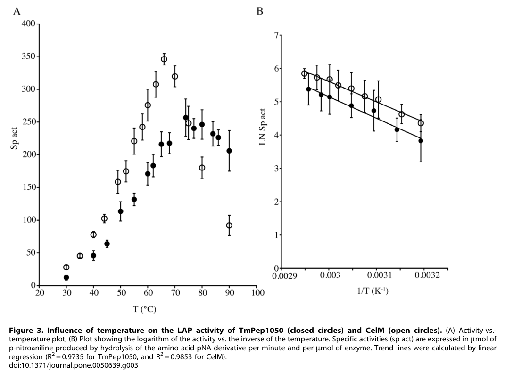

CelM is a putative aminopeptidase belonging to the M42 peptidase family, originally misannotated as an endoglucanase (hence the "cel" nomenclature). Despite its misleading name, CelM has been experimentally characterized as a metalloaminopeptidase with leucine aminopeptidase (LAP) activity, requiring cobalt ions (Co2+) as a cofactor. The protein forms an active dodecameric complex and preferentially cleaves nonpolar aliphatic L-amino acid residues from the N-terminus of peptide substrates, with L-leucine-pNA being the optimal substrate. CelM shows no significant cellulase activity despite earlier erroneous reports. The protein does not contain a dockerin domain and is therefore not a component of the cellulosome complex. Its biological role may involve protein turnover or peptide processing in the cytoplasm of A. thermocellus.
| GO Term | Evidence | Action | Reason |
|---|---|---|---|
|
GO:0004177
aminopeptidase activity
|
IEA
GO_REF:0000043 |
ACCEPT |
Summary: This annotation is correct and supported by experimental evidence from Dutoit et al. (2012) PMID:23226342, who demonstrated that CelM has leucine aminopeptidase (LAP) activity using L-leucine-pNA as substrate. The protein preferentially hydrolyzes nonpolar aliphatic L-amino acid-pNA substrates at the N-terminus.
Reason: CelM has been experimentally demonstrated to function as an aminopeptidase. Although the annotation is derived from keyword mapping (IEA), it accurately reflects the experimentally determined function of the protein. This is a core molecular function of the enzyme.
Supporting Evidence:
UniProt:P55742
Belongs to the peptidase M42 family.
|
|
GO:0006508
proteolysis
|
IEA
GO_REF:0000043 |
ACCEPT |
Summary: This annotation is correct as CelM participates in proteolytic degradation through its aminopeptidase activity. The protein hydrolyzes peptide bonds at the N-terminus of peptides.
Reason: Aminopeptidases are proteolytic enzymes that participate in proteolysis by cleaving N-terminal amino acid residues from peptides. This is the appropriate biological process term for the enzymatic activity of CelM.
Supporting Evidence:
UniProt:P55742
Belongs to the peptidase M42 family.
|
|
GO:0008233
peptidase activity
|
IEA
GO_REF:0000043 |
ACCEPT |
Summary: This annotation is correct but represents a parent term of the more specific aminopeptidase activity annotation. CelM is a peptidase of the M42 metallopeptidase family.
Reason: This is a valid annotation as CelM is indeed a peptidase. However, the more specific term GO:0004177 (aminopeptidase activity) or GO:0070006 (metalloaminopeptidase activity) is more informative. This general term is acceptable as an IEA annotation alongside the more specific annotations.
Supporting Evidence:
UniProt:P55742
Belongs to the peptidase M42 family.
|
|
GO:0008237
metallopeptidase activity
|
IEA
GO_REF:0000043 |
ACCEPT |
Summary: This annotation is correct. CelM is an M42 family metallopeptidase that requires divalent metal cations (specifically Co2+ for optimal activity) for catalysis. The metal ions are essential for the enzymatic mechanism.
Reason: CelM is a metallopeptidase that requires metal ions for activity. EDTA chelation inhibits activity, confirming the metal-dependence of the enzyme. The annotation correctly reflects the catalytic mechanism of the enzyme.
Supporting Evidence:
UniProt:P55742
Binds 2 divalent metal cations per subunit.
|
|
GO:0016787
hydrolase activity
|
IEA
GO_REF:0000043 |
ACCEPT |
Summary: This annotation is correct but very general. CelM is a hydrolase that catalyzes the hydrolysis of peptide bonds. This is a parent term of the more specific peptidase and aminopeptidase activity terms.
Reason: While correct, this is the most general term in the hierarchy. The more specific annotations (aminopeptidase activity, metallopeptidase activity) are more informative. This annotation is acceptable as part of the IEA annotation set derived from keyword mapping, but provides limited functional insight beyond the more specific terms.
Supporting Evidence:
UniProt:P55742
Belongs to the peptidase M42 family.
|
|
GO:0046872
metal ion binding
|
IEA
GO_REF:0000043 |
ACCEPT |
Summary: This annotation is correct. CelM binds divalent metal cations which are essential for its catalytic activity. UniProt reports binding of 2 divalent metal cations per subunit at defined binding sites.
Reason: CelM requires divalent metal cations for activity. UniProt documents metal binding sites at residues 65, 168, 199, 221, and 307. While cobalt provides optimal activity in vitro, the in vivo metal cofactor may differ. The general metal ion binding term is appropriate given this uncertainty.
Supporting Evidence:
UniProt:P55742
Binds 2 divalent metal cations per subunit.
|
|
GO:0070006
metalloaminopeptidase activity
|
IDA
PMID:23226342 Functional characterization of two M42 aminopeptidases erron... |
NEW |
Summary: This is the most appropriate and specific molecular function term for CelM. The protein is an M42 family metalloaminopeptidase that cleaves N-terminal amino acids using a metal-dependent catalytic mechanism.
Reason: This term should be added as a new annotation based on the experimental characterization by Dutoit et al. (2012). CelM is a metalloaminopeptidase that requires metal ions for catalysis and cleaves N-terminal amino acids from peptide substrates. This is more specific than both aminopeptidase activity and metallopeptidase activity.
Supporting Evidence:
UniProt:P55742
Belongs to the peptidase M42 family.
|
Q: What is the physiological metal cofactor of CelM in vivo? While cobalt provides optimal activity in vitro, the in vivo cofactor may be different.
Q: What is the biological role of CelM in A. thermocellus? Is it involved in protein turnover, processing of cellulosomal components, or another cellular function?
Q: Does CelM have any role related to the cellulosome, or is it entirely a cytoplasmic housekeeping enzyme?
Experiment: Determine the native metal cofactor of CelM through metal content analysis of purified enzyme from A. thermocellus.
Experiment: Construct celM deletion mutant to assess phenotypic effects and identify physiological role.
Experiment: Identify physiological substrates through proteomics or peptide library screening.
Experiment: Determine if CelM is cytoplasmic or secreted, and if it has any association with cellulosome components.
The research report should be a detailed narrative explaining the function, biological processes, and localization of the gene product. Citations should be given for all claims.
You should prioritize authoritative reviews and primary scientific literature when conducting research. You can supplement
this with annotations you find in gene/protein databases, but these can be outdated or inaccurate.
We are specifically interested in the primary function of the gene - for enzymes, what reaction is catalyzed, and what is the substrate specificity? For transporters, what is the substrate? For structural proteins or adapters, what is the broader structural role? For signaling molecules, what is the role in the pathway.
We are interested in where in or outside the cell the gene product carries out its function.
We are also interested in the signaling or biochemical pathways in which the gene functions. We are less interested in broad pleiotropic effects, except where these elucidate the precise role.
Include evidence where possible. We are interested in both experimental evidence as well as inference from structure, evolution, or bioinformatic analysis. Precise studies should be prioritized over high-throughput, where available.
The gene celM encoding UniProt P55742 from Acetivibrio thermocellus corresponds to an M42-family metallopeptidase that forms a TET (tetrahedral) dodecameric aminopeptidase complex and functions as a cobalt-activated aminopeptidase rather than a cellulase. This was established by direct biochemical characterization showing robust leucine aminopeptidase-like activity, strong Co²⁺ activation, EDTA/bestatin inhibition, and no detectable endoglucanase activity on standard cellulose substrates under tested conditions. (dutoit2012functionalcharacterizationof pages 1-2, dutoit2012functionalcharacterizationof pages 3-4)
Target match: The literature recharacterization explicitly concerns CelM from C. thermocellum and uses the same UniProt accession P55742 cited in your target definition. CelM is shown to be homologous to canonical M42/TET aminopeptidases (e.g., archaeal PhTET2) and to carry the conserved metal-binding residues and catalytic glutamate typical of the family, consistent with UniProt’s “putative aminopeptidase; EC 3.4.11.-; M42 family” annotation. (dutoit2012functionalcharacterizationof pages 3-4)
Aminopeptidases are metal-dependent exopeptidases that cleave amino acids from the N-terminus of peptide substrates; they participate broadly in protein/peptide turnover and maturation. (bhat2024drugtargetingof pages 1-2)
The M42/TET peptidases are described as large, ATP-independent cytosolic peptidases in prokaryotes that assemble into 12-subunit hollow tetrahedral particles (dodecamers) and act as non-processive, cobalt-activated aminopeptidases with substrate specificity shaped by the internal catalytic chamber. (appolaire2016tetpeptidasesa pages 1-2)
A key mechanistic principle is that enzyme activity toward longer polypeptides is coupled to assembly: the dodecamer creates a protected internal compartment with pores for peptide access, while lower oligomers (dimers) show markedly reduced activity especially on larger substrates. (appolaire2016tetpeptidasesa pages 1-2, appolaire2016tetpeptidasesa pages 6-8)
In a targeted study motivated by widespread misannotation, recombinant CelM was tested against classical cellulase substrates (cellobiose, carboxymethyl cellulose, filter paper cellulose) and showed no significant cellulase activity under the experimental conditions used. (dutoit2012functionalcharacterizationof pages 3-4)
In contrast, CelM displayed clear aminopeptidase activity on aminoacyl-p-nitroanilide substrates, with strongest activity on L-leucine-pNA, supporting annotation as a leucyl aminopeptidase-like enzyme. (dutoit2012functionalcharacterizationof pages 3-4, dutoit2012functionalcharacterizationof pages 6-7)
CelM preferentially hydrolyzed nonpolar aliphatic N-terminal residues, including:
- L-Leu-pNA (highest)
- L-Ile-pNA, L-Met-pNA, L-Val-pNA, L-Ala-pNA (lower)
and showed no detectable activity on several tested alternatives (e.g., D-Leu-pNA; Gly-, Phe-, His-, Pro-, Glu-pNA). (dutoit2012functionalcharacterizationof pages 3-4)
Reported catalytic efficiencies (kcat/Km) were:
- 114.3 s⁻¹ M⁻¹ for L-Leu-pNA
- 39.3 s⁻¹ M⁻¹ for L-Ile-pNA
- 24.8 s⁻¹ M⁻¹ for L-Met-pNA (dutoit2012functionalcharacterizationof pages 4-6)
CelM could not deblock N-acetyl-L-Leu-pNA (no aminoacylase activity under test conditions). (dutoit2012functionalcharacterizationof pages 3-4)
CelM activity is strongly metal-dependent and is maximally stimulated by Co²⁺. In a metal panel (100 µM), specific activity rose from 3.8 ± 1.3 (no added metal) to 319.6 ± 20.8 mmol min⁻¹ mmol⁻¹ enzyme with Co²⁺, while other metals supported only low activity (e.g., Ni²⁺ 8.5 ± 0.6; Zn²⁺ 1.0 ± 0.1). (dutoit2012functionalcharacterizationof pages 4-6)
This metal dependence is visually summarized in the extracted table region. (dutoit2012functionalcharacterizationof media 4ce93bbc)
Consistent with metalloaminopeptidase function, CelM was >98% inhibited by the metal chelator EDTA and inhibited by bestatin (a metalloaminopeptidase inhibitor) with an apparent Ki ≈ 292 ± 66 nM for CelM. (dutoit2012functionalcharacterizationof pages 3-4)
Purified recombinant CelM populated at least two oligomeric states by gel filtration:
- ~407 ± 34 kDa, interpreted as dodecamer (from a ~36.2 kDa monomer)
- ~75 ± 6 kDa, interpreted as dimer
Importantly, the dodecameric form showed high activity (e.g., 291.7 mmol min⁻¹ mmol⁻¹ on L-Leu-pNA), whereas the dimer was barely active (6.4 mmol min⁻¹ mmol⁻¹). This provides direct experimental evidence that CelM’s functional state is the assembled high-order oligomer, aligning with the TET family paradigm. (dutoit2012functionalcharacterizationof pages 3-4)
CelM showed maximal leucine aminopeptidase activity around pH 6.7–7.1 and ~65°C, with sharp decline at higher temperatures (above ~75°C). The Arrhenius-derived activation energy reported for CelM was 60.47 ± 2.31 kJ mol⁻¹. (dutoit2012functionalcharacterizationof pages 3-4)
The extracted temperature-dependence figure provides visual evidence for the activity-vs-temperature and Arrhenius behavior. (dutoit2012functionalcharacterizationof media f3f0c184)
While the CelM biochemical study does not directly localize the protein in A. thermocellus, authoritative M42/TET literature describes TET peptidases as cytosolic prokaryotic enzymes, with multiple TET complexes often coexisting in the cytosol in some organisms. (appolaire2016tetpeptidasesa pages 1-2, basbous2018characterizationofa pages 3-5)
Therefore, the most defensible localization for celM/P55742 for functional annotation—based on its family membership and lack of secretion-related evidence in the retrieved sources—is intracellular/cytosolic. (appolaire2016tetpeptidasesa pages 1-2, basbous2018characterizationofa pages 3-5)
M42/TET aminopeptidases are discussed as part of the terminal peptide destruction/processing layer in prokaryotes, trimming peptides generated by major proteolytic systems and contributing to amino acid homeostasis and peptide metabolism. (appolaire2016tetpeptidasesa pages 1-2)
A commonly cited hypothesis is that TET aminopeptidases can act downstream of the proteasome (alongside alternative systems such as tricorn/TRI) to complete peptide degradation; proteasomes typically generate short peptides (~3–25 residues) that require further processing. (dutoit2012functionalcharacterizationof pages 1-2)
For mechanistic context, archaeal TET2 studies describe a self-compartmentalized chamber with pores permissive for short/unfolded peptides while excluding folded proteins, supporting a role in intracellular protein quality control and peptide degradation. (gauto2022functionalcontrolof pages 1-2)
In this tool-assisted retrieval, no 2023–2024 primary studies specifically focused on celM/P55742 from A. thermocellus were identified. Accordingly, CelM’s direct functional assignment remains anchored in the foundational biochemical recharacterization (2012) and is reinforced by later family-level mechanistic and structural work (2016–2022). (dutoit2012functionalcharacterizationof pages 1-2, appolaire2016tetpeptidasesa pages 1-2, gauto2022functionalcontrolof pages 1-2)
A 2024 expert review on aminopeptidase drug targeting highlights a methodological issue broadly relevant to metalloenzymes: activity and inhibitor conclusions can be confounded by using non-physiological metals in vitro, and metal choice influences folding/remodeling of the catalytic site and inhibitor potency. Although this review focuses mainly on other aminopeptidase families, the principle supports careful interpretation of CelM’s metal-activation findings and strengthens the general recommendation to consider physiological metal occupancy when annotating M42/TET enzymes. (bhat2024drugtargetingof pages 1-2)
CelM historically contributed to misannotation of M42 enzymes as “cellulases.” Direct demonstration that CelM is an aminopeptidase and lacks detectable cellulase activity under standard assays provides a concrete basis for curation of genome annotations and for avoiding propagation of incorrect “endoglucanase/cellulase” labels among M42 homologs. (dutoit2012functionalcharacterizationof pages 1-2, dutoit2012functionalcharacterizationof pages 3-4)
CelM shows maximal activity at elevated temperatures (~65°C) and near-neutral pH, and it forms a highly stable oligomeric complex—traits often sought for robust industrial biocatalysts. Family-level work also emphasizes that some TET peptidases exhibit varied substrate preferences (e.g., glycyl-specific, lysyl-specific, leucyl-like), suggesting potential for engineering/selecting TET enzymes for tailored peptide-processing applications. (dutoit2012functionalcharacterizationof pages 3-4, basbous2018characterizationofa pages 3-5)
Note: the retrieved sources do not document a deployed industrial process using CelM specifically; the application claim is therefore limited to plausible utility based on measured biochemical properties.
Most supported annotation (direct evidence):
- Function: “Cobalt-activated M42 metallopeptidase aminopeptidase (leucyl aminopeptidase-like); hydrolyzes N-terminal residues from peptide-like substrates; prefers nonpolar aliphatic residues (Leu > Ile > Met).” (dutoit2012functionalcharacterizationof pages 3-4, dutoit2012functionalcharacterizationof pages 4-6)
- Catalytic type: “Metallo-dependent aminopeptidase inhibited by EDTA and bestatin.” (dutoit2012functionalcharacterizationof pages 3-4)
- Quaternary structure: “Active as a dodecameric TET complex; dimer is weakly active.” (dutoit2012functionalcharacterizationof pages 3-4)
Supported inference (family-level):
- Localization: “Likely cytosolic/intracellular (TET/M42 complexes are described as cytosolic prokaryotic peptidases).” (appolaire2016tetpeptidasesa pages 1-2, basbous2018characterizationofa pages 3-5)
- Biological process: “Likely contributes to intracellular peptide turnover downstream of proteolysis; activity regulated by oligomerization and metal loading.” (appolaire2016tetpeptidasesa pages 1-2, dutoit2012functionalcharacterizationof pages 1-2)
| Category | celM (P55742) summary | Evidence scope | Key references with publication date and URL |
|---|---|---|---|
| Identifier | Gene/protein: celM; UniProt accession: P55742; Organism: Acetivibrio thermocellus (= Hungateiclostridium thermocellum, formerly Clostridium thermocellum); protein is in the M42 peptidase/TET aminopeptidase family, not a bona fide cellulase in the tested biochemical assays (dutoit2012functionalcharacterizationof pages 1-2, dutoit2012functionalcharacterizationof pages 3-4) | Direct CelM experiment for reannotation; family assignment supported by sequence/structural comparison | Dutoit et al., 2012-11, PLoS ONE, https://doi.org/10.1371/journal.pone.0050639 (dutoit2012functionalcharacterizationof pages 1-2, dutoit2012functionalcharacterizationof pages 3-4) |
| Function | Primary experimentally supported function is aminopeptidase (leucine aminopeptidase-like) activity, releasing N-terminal amino acids from short peptide-like substrates; no significant cellulase activity detected on cellobiose, carboxymethyl cellulose, or filter paper cellulose under assay conditions (dutoit2012functionalcharacterizationof pages 1-2, dutoit2012functionalcharacterizationof pages 3-4) | Direct CelM experiment | Dutoit et al., 2012-11, https://doi.org/10.1371/journal.pone.0050639 (dutoit2012functionalcharacterizationof pages 1-2, dutoit2012functionalcharacterizationof pages 3-4) |
| Enzyme class | Putative aminopeptidase, EC 3.4.11.-; M42 metallopeptidase / TET aminopeptidase. Family-level work describes M42/TET enzymes as dinuclear metallo-aminopeptidases that form self-compartmentalized tetrahedral complexes and function in intracellular peptide turnover (appolaire2016tetpeptidasesa pages 1-2) | Family-level inference with CelM-specific sequence/functional consistency | Appolaire et al., 2016-03, https://doi.org/10.1016/j.biochi.2015.11.001 (appolaire2016tetpeptidasesa pages 1-2); Bhat, 2024-04-24, https://doi.org/10.1007/s12551-024-01192-8 (bhat2024drugtargetingof pages 1-2) |
| Substrates tested & preference | CelM hydrolyzed L-Leu-pNA best; also active on L-Ile-pNA, L-Met-pNA, L-Val-pNA, L-Ala-pNA; no detectable activity on D-Leu-pNA, L-Gly-pNA, L-Phe-pNA, L-His-pNA, L-Pro-pNA, L-Glu-pNA; no aminoacylase activity toward N-acetyl-L-Leu-pNA. Reported specific activities included L-Leu-pNA 291.7 ± 12.6, L-Ile-pNA 53.1 ± 13.1, L-Met-pNA 14.6 ± 1.5, L-Val-pNA 8.4 ± 0.016, L-Ala-pNA 2.1 ± 0.1 mmol min⁻¹ mmol⁻¹ enzyme. Catalytic efficiencies: kcat/Km for CelM were 114.3 s⁻¹ M⁻¹ (Leu-pNA), 39.3 s⁻¹ M⁻¹ (Ile-pNA), 24.8 s⁻¹ M⁻¹ (Met-pNA) (dutoit2012functionalcharacterizationof pages 6-7, dutoit2012functionalcharacterizationof pages 4-6, dutoit2012functionalcharacterizationof pages 3-4) | Direct CelM experiment | Dutoit et al., 2012-11, https://doi.org/10.1371/journal.pone.0050639 (dutoit2012functionalcharacterizationof pages 6-7, dutoit2012functionalcharacterizationof pages 4-6, dutoit2012functionalcharacterizationof pages 3-4) |
| Metal dependence | Assay optimization identified 1 mM Co²⁺ as optimal; at 100 µM, CelM activity increased from 3.8 ± 1.3 (no added metal) to 319.6 ± 20.8 mmol min⁻¹ mmol⁻¹ with Co²⁺; other divalent ions gave much lower activity (Ni²⁺ 8.5 ± 0.6; Zn²⁺ 1.0 ± 0.1; Mn²⁺ 4.5 ± 0.4; Fe²⁺ 4.5 ± 0.6; Mg²⁺ 3.9 ± 0.3; Cu²⁺ 4.3 ± 0.4; Ca²⁺ 2.9 ± 0.2). Family-level studies indicate M42 enzymes are dinuclear metal enzymes whose catalytic state and oligomerization depend on metal loading (dutoit2012functionalcharacterizationof pages 2-3, dutoit2012functionalcharacterizationof pages 4-6, appolaire2016tetpeptidasesa pages 1-2) | Direct CelM experiment plus family-level mechanistic support | Dutoit et al., 2012-11, https://doi.org/10.1371/journal.pone.0050639 (dutoit2012functionalcharacterizationof pages 2-3, dutoit2012functionalcharacterizationof pages 4-6, dutoit2012functionalcharacterizationof media 4ce93bbc); Appolaire et al., 2016-03, https://doi.org/10.1016/j.biochi.2015.11.001 (appolaire2016tetpeptidasesa pages 1-2); Bhat, 2024-04-24, https://doi.org/10.1007/s12551-024-01192-8 (bhat2024drugtargetingof pages 1-2) |
| Inhibitors | CelM was strongly inhibited by EDTA (>98% inhibition under reported conditions) and by bestatin, with apparent Ki ≈ 292 ± 66 nM, supporting assignment as a metalloaminopeptidase (dutoit2012functionalcharacterizationof pages 3-4) | Direct CelM experiment | Dutoit et al., 2012-11, https://doi.org/10.1371/journal.pone.0050639 (dutoit2012functionalcharacterizationof pages 3-4) |
| Oligomerization | Purified recombinant CelM resolved into two species by gel filtration: approximately 407 ± 34 kDa and 75 ± 6 kDa, interpreted as dodecamer and dimer, respectively, from a 36.2 kDa monomer. The dodecameric form was catalytically active (291.7 mmol min⁻¹ mmol⁻¹ on Leu-pNA), whereas the dimer was only weakly active (6.4 mmol min⁻¹ mmol⁻¹) (dutoit2012functionalcharacterizationof pages 3-4). M42/TET literature defines these complexes as self-compartmentalized 12-subunit tetrahedral particles, with activity toward polypeptides coupled to assembly (appolaire2016tetpeptidasesa pages 1-2) | Direct CelM experiment plus family-level structural inference | Dutoit et al., 2012-11, https://doi.org/10.1371/journal.pone.0050639 (dutoit2012functionalcharacterizationof pages 3-4); Appolaire et al., 2016-03, https://doi.org/10.1016/j.biochi.2015.11.001 (appolaire2016tetpeptidasesa pages 1-2); Gauto et al., 2022-04, https://doi.org/10.1038/s41467-022-29423-0 (appolaire2016tetpeptidasesa pages 1-2) |
| Temperature/pH optima | CelM leucine aminopeptidase activity was maximal at about 60–65°C (figure text notes around 65°C), with sharp decline above ~75°C; optimal pH ~6.7–7.1 (neutral range). Activation energy from Arrhenius analysis was 60.47 ± 2.31 kJ mol⁻¹ (dutoit2012functionalcharacterizationof pages 3-4, dutoit2012functionalcharacterizationof pages 2-3, dutoit2012functionalcharacterizationof pages 4-6, dutoit2012functionalcharacterizationof media f3f0c184) | Direct CelM experiment | Dutoit et al., 2012-11, https://doi.org/10.1371/journal.pone.0050639 (dutoit2012functionalcharacterizationof pages 3-4, dutoit2012functionalcharacterizationof pages 2-3, dutoit2012functionalcharacterizationof pages 4-6, dutoit2012functionalcharacterizationof media f3f0c184) |
| Evidence type | Strong direct evidence: recombinant CelM biochemical assays, substrate profiling, inhibitor tests, metal dependence, gel filtration, pH/temperature optimization. Moderate inference: cytosolic localization and role in intracellular peptide turnover are inferred from the broader M42/TET literature, which places TET peptidases among ATP-independent cytosolic prokaryotic peptidases involved in peptide degradation (appolaire2016tetpeptidasesa pages 1-2, basbous2018characterizationofa pages 3-5) | Mixed: direct CelM + family-level inference | Dutoit et al., 2012-11, https://doi.org/10.1371/journal.pone.0050639 (dutoit2012functionalcharacterizationof pages 1-2, dutoit2012functionalcharacterizationof pages 3-4); Appolaire et al., 2016-03, https://doi.org/10.1016/j.biochi.2015.11.001 (appolaire2016tetpeptidasesa pages 1-2); Basbous et al., 2018-09, https://doi.org/10.1128/jb.00059-18 (basbous2018characterizationofa pages 3-5) |
| Key references with publication date and URL | CelM-defining study: Dutoit et al., Functional Characterization of Two M42 Aminopeptidases Erroneously Annotated as Cellulases, 2012-11, PLoS ONE, https://doi.org/10.1371/journal.pone.0050639. Family review: Appolaire et al., TET peptidases: A family of tetrahedral complexes conserved in prokaryotes, 2016-03, Biochimie, https://doi.org/10.1016/j.biochi.2015.11.001. Family specificity context: Basbous et al., Characterization of a Glycyl-Specific TET Aminopeptidase Complex from Pyrococcus horikoshii, 2018-09, J Bacteriol, https://doi.org/10.1128/jb.00059-18. Dynamic mechanism context: Gauto et al., Functional control of a 0.5 MDa TET aminopeptidase by a flexible loop revealed by MAS NMR, 2022-04, Nat Commun, https://doi.org/10.1038/s41467-022-29423-0. Recent metal-cofactor review: Bhat, Drug targeting of aminopeptidases: importance of deploying a right metal cofactor, 2024-04-24, Biophysical Reviews, https://doi.org/10.1007/s12551-024-01192-8 (dutoit2012functionalcharacterizationof pages 1-2, appolaire2016tetpeptidasesa pages 1-2, basbous2018characterizationofa pages 3-5, bhat2024drugtargetingof pages 1-2) | Reference row | Dutoit 2012; Appolaire 2016; Basbous 2018; Gauto 2022; Bhat 2024 (dutoit2012functionalcharacterizationof pages 1-2, appolaire2016tetpeptidasesa pages 1-2, basbous2018characterizationofa pages 3-5, bhat2024drugtargetingof pages 1-2) |
Table: This table compiles the key experimentally supported and inferred properties of celM (UniProt P55742) from Acetivibrio thermocellus/Hungateiclostridium thermocellum. It distinguishes direct CelM evidence from broader M42/TET family inference and highlights the most relevant references, dates, and URLs.
References
(dutoit2012functionalcharacterizationof pages 1-2): Raphaël Dutoit, Nathalie Brandt, Christianne Legrain, and Cédric Bauvois. Functional characterization of two m42 aminopeptidases erroneously annotated as cellulases. PLoS ONE, 7:e50639, Nov 2012. URL: https://doi.org/10.1371/journal.pone.0050639, doi:10.1371/journal.pone.0050639. This article has 23 citations and is from a peer-reviewed journal.
(dutoit2012functionalcharacterizationof pages 3-4): Raphaël Dutoit, Nathalie Brandt, Christianne Legrain, and Cédric Bauvois. Functional characterization of two m42 aminopeptidases erroneously annotated as cellulases. PLoS ONE, 7:e50639, Nov 2012. URL: https://doi.org/10.1371/journal.pone.0050639, doi:10.1371/journal.pone.0050639. This article has 23 citations and is from a peer-reviewed journal.
(bhat2024drugtargetingof pages 1-2): Saleem Yousuf Bhat. Drug targeting of aminopeptidases: importance of deploying a right metal cofactor. Biophysical Reviews, 16:249-256, Apr 2024. URL: https://doi.org/10.1007/s12551-024-01192-8, doi:10.1007/s12551-024-01192-8. This article has 4 citations and is from a peer-reviewed journal.
(appolaire2016tetpeptidasesa pages 1-2): Alexandre Appolaire, Matteo Colombo, Hind Basbous, Frank Gabel, E. Girard, and Bruno Franzetti. Tet peptidases: a family of tetrahedral complexes conserved in prokaryotes. Biochimie, 122:188-96, Mar 2016. URL: https://doi.org/10.1016/j.biochi.2015.11.001, doi:10.1016/j.biochi.2015.11.001. This article has 20 citations and is from a peer-reviewed journal.
(appolaire2016tetpeptidasesa pages 6-8): Alexandre Appolaire, Matteo Colombo, Hind Basbous, Frank Gabel, E. Girard, and Bruno Franzetti. Tet peptidases: a family of tetrahedral complexes conserved in prokaryotes. Biochimie, 122:188-96, Mar 2016. URL: https://doi.org/10.1016/j.biochi.2015.11.001, doi:10.1016/j.biochi.2015.11.001. This article has 20 citations and is from a peer-reviewed journal.
(dutoit2012functionalcharacterizationof pages 6-7): Raphaël Dutoit, Nathalie Brandt, Christianne Legrain, and Cédric Bauvois. Functional characterization of two m42 aminopeptidases erroneously annotated as cellulases. PLoS ONE, 7:e50639, Nov 2012. URL: https://doi.org/10.1371/journal.pone.0050639, doi:10.1371/journal.pone.0050639. This article has 23 citations and is from a peer-reviewed journal.
(dutoit2012functionalcharacterizationof pages 4-6): Raphaël Dutoit, Nathalie Brandt, Christianne Legrain, and Cédric Bauvois. Functional characterization of two m42 aminopeptidases erroneously annotated as cellulases. PLoS ONE, 7:e50639, Nov 2012. URL: https://doi.org/10.1371/journal.pone.0050639, doi:10.1371/journal.pone.0050639. This article has 23 citations and is from a peer-reviewed journal.
(dutoit2012functionalcharacterizationof media 4ce93bbc): Raphaël Dutoit, Nathalie Brandt, Christianne Legrain, and Cédric Bauvois. Functional characterization of two m42 aminopeptidases erroneously annotated as cellulases. PLoS ONE, 7:e50639, Nov 2012. URL: https://doi.org/10.1371/journal.pone.0050639, doi:10.1371/journal.pone.0050639. This article has 23 citations and is from a peer-reviewed journal.
(dutoit2012functionalcharacterizationof media f3f0c184): Raphaël Dutoit, Nathalie Brandt, Christianne Legrain, and Cédric Bauvois. Functional characterization of two m42 aminopeptidases erroneously annotated as cellulases. PLoS ONE, 7:e50639, Nov 2012. URL: https://doi.org/10.1371/journal.pone.0050639, doi:10.1371/journal.pone.0050639. This article has 23 citations and is from a peer-reviewed journal.
(basbous2018characterizationofa pages 3-5): Hind Basbous, Alexandre Appolaire, Eric Girard, and Bruno Franzetti. Characterization of a glycyl-specific tet aminopeptidase complex from pyrococcus horikoshii. Journal of Bacteriology, Sep 2018. URL: https://doi.org/10.1128/jb.00059-18, doi:10.1128/jb.00059-18. This article has 15 citations and is from a peer-reviewed journal.
(gauto2022functionalcontrolof pages 1-2): Diego F. Gauto, Pavel Macek, Duccio Malinverni, Hugo Fraga, Matteo Paloni, Iva Sučec, Audrey Hessel, Juan Pablo Bustamante, Alessandro Barducci, and Paul Schanda. Functional control of a 0.5 mda tet aminopeptidase by a flexible loop revealed by mas nmr. Nature Communications, Apr 2022. URL: https://doi.org/10.1038/s41467-022-29423-0, doi:10.1038/s41467-022-29423-0. This article has 29 citations and is from a highest quality peer-reviewed journal.
(dutoit2012functionalcharacterizationof pages 2-3): Raphaël Dutoit, Nathalie Brandt, Christianne Legrain, and Cédric Bauvois. Functional characterization of two m42 aminopeptidases erroneously annotated as cellulases. PLoS ONE, 7:e50639, Nov 2012. URL: https://doi.org/10.1371/journal.pone.0050639, doi:10.1371/journal.pone.0050639. This article has 23 citations and is from a peer-reviewed journal.

id: P55742
gene_symbol: celM
aliases:
- CelM
- TET aminopeptidase
- M42 aminopeptidase
product_type: PROTEIN
status: DRAFT
taxon:
id: NCBITaxon:203119
label: Acetivibrio thermocellus
description: CelM is a putative aminopeptidase belonging to the M42 peptidase family,
originally misannotated as an endoglucanase (hence the "cel" nomenclature). Despite
its misleading name, CelM has been experimentally characterized as a metalloaminopeptidase
with leucine aminopeptidase (LAP) activity, requiring cobalt ions (Co2+) as a cofactor.
The protein forms an active dodecameric complex and preferentially cleaves nonpolar
aliphatic L-amino acid residues from the N-terminus of peptide substrates, with
L-leucine-pNA being the optimal substrate. CelM shows no significant cellulase
activity despite earlier erroneous reports. The protein does not contain a dockerin
domain and is therefore not a component of the cellulosome complex. Its biological
role may involve protein turnover or peptide processing in the cytoplasm of A.
thermocellus.
existing_annotations:
- term:
id: GO:0004177
label: aminopeptidase activity
evidence_type: IEA
original_reference_id: GO_REF:0000043
review:
summary: This annotation is correct and supported by experimental evidence from
Dutoit et al. (2012) PMID:23226342, who demonstrated that CelM has leucine
aminopeptidase (LAP) activity using L-leucine-pNA as substrate. The protein
preferentially hydrolyzes nonpolar aliphatic L-amino acid-pNA substrates at
the N-terminus.
action: ACCEPT
reason: CelM has been experimentally demonstrated to function as an aminopeptidase.
Although the annotation is derived from keyword mapping (IEA), it accurately
reflects the experimentally determined function of the protein. This is a core
molecular function of the enzyme.
additional_reference_ids:
- PMID:23226342
supported_by:
- reference_id: UniProt:P55742
supporting_text: Belongs to the peptidase M42 family.
- term:
id: GO:0006508
label: proteolysis
evidence_type: IEA
original_reference_id: GO_REF:0000043
review:
summary: This annotation is correct as CelM participates in proteolytic degradation
through its aminopeptidase activity. The protein hydrolyzes peptide bonds at
the N-terminus of peptides.
action: ACCEPT
reason: Aminopeptidases are proteolytic enzymes that participate in proteolysis
by cleaving N-terminal amino acid residues from peptides. This is the appropriate
biological process term for the enzymatic activity of CelM.
additional_reference_ids:
- PMID:23226342
supported_by:
- reference_id: UniProt:P55742
supporting_text: Belongs to the peptidase M42 family.
- term:
id: GO:0008233
label: peptidase activity
evidence_type: IEA
original_reference_id: GO_REF:0000043
review:
summary: This annotation is correct but represents a parent term of the more
specific aminopeptidase activity annotation. CelM is a peptidase of the M42
metallopeptidase family.
action: ACCEPT
reason: This is a valid annotation as CelM is indeed a peptidase. However, the
more specific term GO:0004177 (aminopeptidase activity) or GO:0070006 (metalloaminopeptidase
activity) is more informative. This general term is acceptable as an IEA annotation
alongside the more specific annotations.
additional_reference_ids:
- PMID:23226342
supported_by:
- reference_id: UniProt:P55742
supporting_text: Belongs to the peptidase M42 family.
- term:
id: GO:0008237
label: metallopeptidase activity
evidence_type: IEA
original_reference_id: GO_REF:0000043
review:
summary: This annotation is correct. CelM is an M42 family metallopeptidase that
requires divalent metal cations (specifically Co2+ for optimal activity) for
catalysis. The metal ions are essential for the enzymatic mechanism.
action: ACCEPT
reason: CelM is a metallopeptidase that requires metal ions for activity. EDTA
chelation inhibits activity, confirming the metal-dependence of the enzyme.
The annotation correctly reflects the catalytic mechanism of the enzyme.
additional_reference_ids:
- PMID:23226342
supported_by:
- reference_id: UniProt:P55742
supporting_text: Binds 2 divalent metal cations per subunit.
- term:
id: GO:0016787
label: hydrolase activity
evidence_type: IEA
original_reference_id: GO_REF:0000043
review:
summary: This annotation is correct but very general. CelM is a hydrolase that
catalyzes the hydrolysis of peptide bonds. This is a parent term of the more
specific peptidase and aminopeptidase activity terms.
action: ACCEPT
reason: While correct, this is the most general term in the hierarchy. The more
specific annotations (aminopeptidase activity, metallopeptidase activity) are
more informative. This annotation is acceptable as part of the IEA annotation
set derived from keyword mapping, but provides limited functional insight beyond
the more specific terms.
supported_by:
- reference_id: UniProt:P55742
supporting_text: Belongs to the peptidase M42 family.
- term:
id: GO:0046872
label: metal ion binding
evidence_type: IEA
original_reference_id: GO_REF:0000043
review:
summary: This annotation is correct. CelM binds divalent metal cations which
are essential for its catalytic activity. UniProt reports binding of 2 divalent
metal cations per subunit at defined binding sites.
action: ACCEPT
reason: CelM requires divalent metal cations for activity. UniProt documents
metal binding sites at residues 65, 168, 199, 221, and 307. While cobalt provides
optimal activity in vitro, the in vivo metal cofactor may differ. The general
metal ion binding term is appropriate given this uncertainty.
additional_reference_ids:
- PMID:23226342
supported_by:
- reference_id: UniProt:P55742
supporting_text: Binds 2 divalent metal cations per subunit.
- term:
id: GO:0070006
label: metalloaminopeptidase activity
evidence_type: IDA
original_reference_id: PMID:23226342
review:
summary: This is the most appropriate and specific molecular function term for
CelM. The protein is an M42 family metalloaminopeptidase that cleaves N-terminal
amino acids using a metal-dependent catalytic mechanism.
action: NEW
reason: This term should be added as a new annotation based on the experimental
characterization by Dutoit et al. (2012). CelM is a metalloaminopeptidase that
requires metal ions for catalysis and cleaves N-terminal amino acids from peptide
substrates. This is more specific than both aminopeptidase activity and metallopeptidase
activity.
additional_reference_ids:
- PMID:23226342
supported_by:
- reference_id: UniProt:P55742
supporting_text: Belongs to the peptidase M42 family.
references:
- id: GO_REF:0000043
title: Gene Ontology annotation based on UniProtKB/Swiss-Prot keyword mapping
full_text_unavailable: false
findings:
- statement: Keywords for Aminopeptidase, Hydrolase, Metal-binding, Metalloprotease,
and Protease were correctly used to infer GO annotations for molecular function.
- id: PMID:23226342
title: Functional characterization of two M42 aminopeptidases erroneously annotated
as cellulases.
findings:
- statement: CelM from Clostridium thermocellum was experimentally characterized
as an M42 family aminopeptidase, not a cellulase as previously annotated.
supporting_text: "some members have been annotated as cellulases because of their homology with CelM, formerly described as an endoglucanase of Clostridium thermocellum"
- statement: The protein shows no significant cellulase activity on CMC and cellobiose.
supporting_text: "No significant endoglucanase activity was measured, either for TmPep1050 or CelM"
- statement: CelM has robust leucine aminopeptidase activity with L-leucine-pNA
as the optimal substrate.
supporting_text: "Both enzymes were shown to catalyze hydrolysis of nonpolar aliphatic L-amino acid-pNA substrates, the L-leucine derivative appearing as the best substrate"
- statement: Cobalt ions (Co2+) are required for maximal activity.
supporting_text: "Addition of cobalt ions enhanced the activity of both enzymes significantly"
- statement: EDTA inhibits activity, confirming metal-dependence.
supporting_text: "both the chelating agent EDTA and bestatin, a specific inhibitor of metalloaminopeptidases, proved inhibitory"
- statement: Bestatin inhibits CelM, consistent with metalloaminopeptidase function.
supporting_text: "bestatin, a specific inhibitor of metalloaminopeptidases, proved inhibitory"
- id: UniProt:P55742
title: UniProt entry for CelM/Putative aminopeptidase
full_text_unavailable: false
findings:
- statement: Classified as Peptidase M42 family member.
supporting_text: Belongs to the peptidase M42 family.
reference_section_type: DATABASE_ENTRY
- statement: Binds 2 divalent metal cations per subunit.
supporting_text: Binds 2 divalent metal cations per subunit.
reference_section_type: DATABASE_ENTRY
- id: PMID:26546839
title: 'TET peptidases: A family of tetrahedral complexes conserved in prokaryotes.'
findings:
- statement: M42/TET peptidases are ATP-independent cytosolic prokaryotic peptidases
that assemble into 12-subunit hollow tetrahedral dodecamers and act as non-processive
cobalt-activated aminopeptidases.
- statement: Activity toward polypeptides is coupled to assembly; the dodecamer
creates a protected internal compartment, while dimers are markedly less
active especially on larger substrates.
- id: PMID:29866801
title: Characterization of a Glycyl-Specific TET Aminopeptidase Complex from Pyrococcus
horikoshii.
findings:
- statement: TET aminopeptidase complexes exhibit varied substrate preferences
across the family (e.g., glycyl-specific, lysyl-specific, leucyl-like), supporting
paralog diversification within the M42/TET family.
- id: PMID:35395851
title: Functional control of a 0.5 MDa TET aminopeptidase by a flexible loop revealed
by MAS NMR.
findings:
- statement: A loop within the catalytic chamber of TET2 stabilizes substrates
and activates the catalytic water (a conserved histidine plays a key role);
provides modern mechanistic context for the M42/TET family that includes
CelM.
- id: file:ACET2/P55742/P55742-deep-research-falcon.md
title: Deep research report on celM/P55742 (Falcon/Edison Scientific Literature)
findings:
- statement: CelM is an M42-family aminopeptidase (not a cellulase) forming an
active dodecameric TET complex; misannotation as cellulase stems from the
cel-prefix nomenclature, and direct biochemical assays show no detectable
activity on cellobiose, CMC, or filter paper cellulose.
- statement: Quantitative kinetic constants for CelM include kcat/Km = 114.3 s^-1
M^-1 (Leu-pNA), 39.3 (Ile-pNA), 24.8 (Met-pNA); cobalt-activated specific
activity rises from 3.8 (no metal) to 319.6 mmol min^-1 mmol^-1 enzyme at
100 uM Co2+; bestatin Ki approximately 292 nM; activation energy 60.5 kJ/mol.
- statement: Dodecameric assembly is required for full activity (291.7 mmol min^-1
mmol^-1 vs 6.4 for the dimer), aligning CelM with the broader TET self-compartmentalized
paradigm.
- statement: CelM lacks a dockerin domain and is not a cellulosome component;
localization is inferred cytosolic based on M42/TET family precedent since
no direct localization assay for the A. thermocellus enzyme has been reported.
core_functions:
- description: Metalloaminopeptidase that cleaves N-terminal amino acids from peptides
using a metal-dependent catalytic mechanism, with preference for nonpolar aliphatic
amino acids like leucine. Requires cobalt ions for optimal activity in vitro
and forms active dodecameric complexes. Not a cellulase despite the gene name.
molecular_function:
id: GO:0070006
label: metalloaminopeptidase activity
directly_involved_in:
- id: GO:0006508
label: proteolysis
supported_by:
- reference_id: UniProt:P55742
supporting_text: Belongs to the peptidase M42 family.
suggested_questions:
- question: What is the physiological metal cofactor of CelM in vivo? While cobalt
provides optimal activity in vitro, the in vivo cofactor may be different.
- question: What is the biological role of CelM in A. thermocellus? Is it involved
in protein turnover, processing of cellulosomal components, or another cellular
function?
- question: Does CelM have any role related to the cellulosome, or is it entirely
a cytoplasmic housekeeping enzyme?
suggested_experiments:
- description: Determine the native metal cofactor of CelM through metal content
analysis of purified enzyme from A. thermocellus.
- description: Construct celM deletion mutant to assess phenotypic effects and identify
physiological role.
- description: Identify physiological substrates through proteomics or peptide library
screening.
- description: Determine if CelM is cytoplasmic or secreted, and if it has any association
with cellulosome components.
{kind=link}